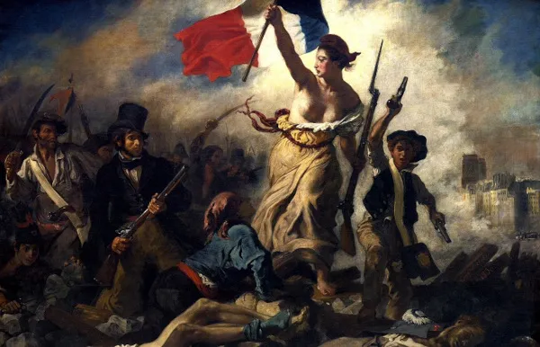
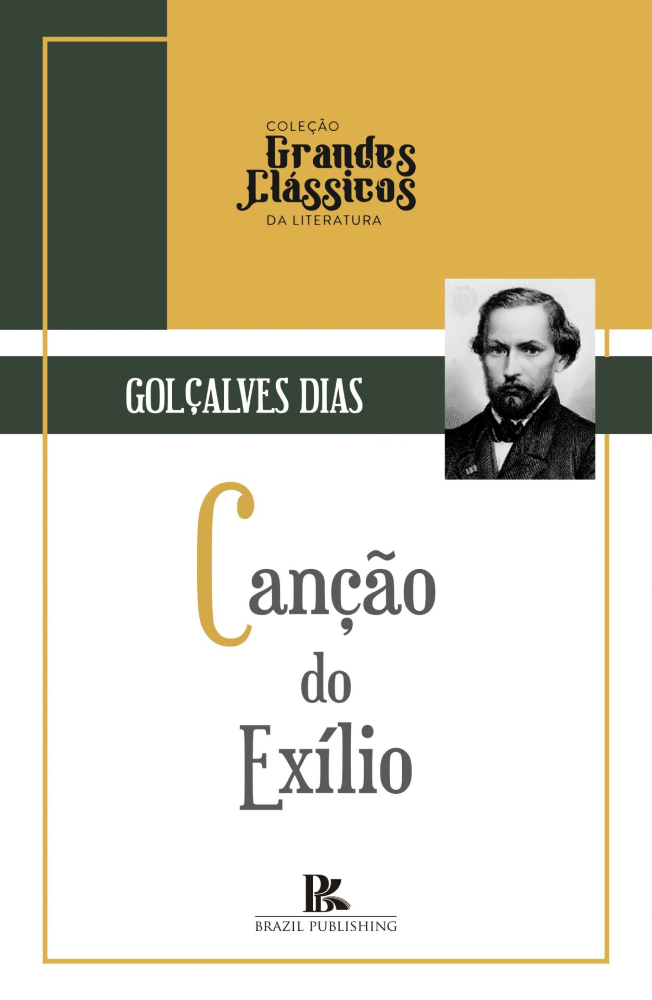

Romantismo:
Primeira Geração
Contexto Histórico
O movimento teve início na Europa, principalmente na Alemanha, França e Inglaterra, como uma forma de expressar emoções, individualidade e imaginação, em oposição à frieza e objetividade da razão iluminista. Principais Fatores Históricos:
- Revolução Francesa (1789) → Trouxe a valorização da liberdade e do individualismo.
- Revolução Industrial → Impactou a sociedade, trazendo um sentimento de nostalgia e valorização da natureza.
- Nacionalismo → Fortaleceu a ideia de identidade cultural e histórica de cada nação.
- Rejeição ao Iluminismo → Em vez da razão, os românticos exaltavam o sentimento, a intuição e o mistério.
Características
Nacionalismo e Indianismo
Exaltação da Natureza
Idealização do Amor e da Mulher
Egocentrismo e Sentimentalismo
Religiosidade e Escapismo

Os 4 tipos do Romantismo
Autores
José de Alencar é considerado um dos maiores expoentes do
romantismo no Brasil. Na primeira geração romântica, com teor nacionalista e indianista,
Alencar exaltou diversos aspectos nacionais e a figura do índio como herói brasileiro.
Gonçalves Dias foi um dos maiores poetas da primeira geração
romântica do Brasil. Lembrado como poeta indianista, ele escreveu sobre temas relacionados à
figura do índio. Além de poeta, ele foi jornalista, advogado e etnólogo.
Gonçalves de Magalhães (1811-1882) foi um escritor
brasileiro pertencente à primeira geração romântica, fase marcada pelo binômio
nacionalismo-indianismo.
Ele foi considerado um dos precursores do romantismo no Brasil.
Obras
"O Guarani" (1857), de José de Alencar, é um romance
indianista do Romantismo brasileiro.
Conta a história de Peri, um índio corajoso, e Ceci, uma jovem portuguesa. Peri protege Ceci
de perigos, incluindo o traidor Loredano e um ataque indígena. No final, ele renuncia à sua
cultura para ficar com ela, simbolizando a união do indígena com o europeu.

"Canção do Exílio" é um poema escrito por Gonçalves Dias
em 1843, durante seu exílio em Portugal. É um dos mais famosos do Romantismo brasileiro.
O eu lírico expressa saudade do Brasil, exaltando suas belezas naturais, como palmeiras,
sabiás e rios. Ele compara a pátria idealizada com o lugar onde está exilado, demonstrando
forte sentimento nacionalista.
"Suspiros Poéticos e Saudades" (1836) foi o primeiro livro
de Gonçalves de Magalhães e marcou o início do Romantismo no Brasil.
A obra reúne poemas que exploram temas como saudade, religiosidade, nacionalismo e natureza.
Magalhães expressa sentimentos profundos, influenciados pelo Romantismo europeu, mas
adaptados à realidade brasileira.
Folhetim

Os folhetins eram histórias publicadas em capítulos nos jornais, muito populares entre os leitores da época. Eles ajudaram a difundir a literatura romântica, tornando-a acessível ao público. Muitos romances famosos começaram como folhetins, incluindo várias obras de José de Alencar.